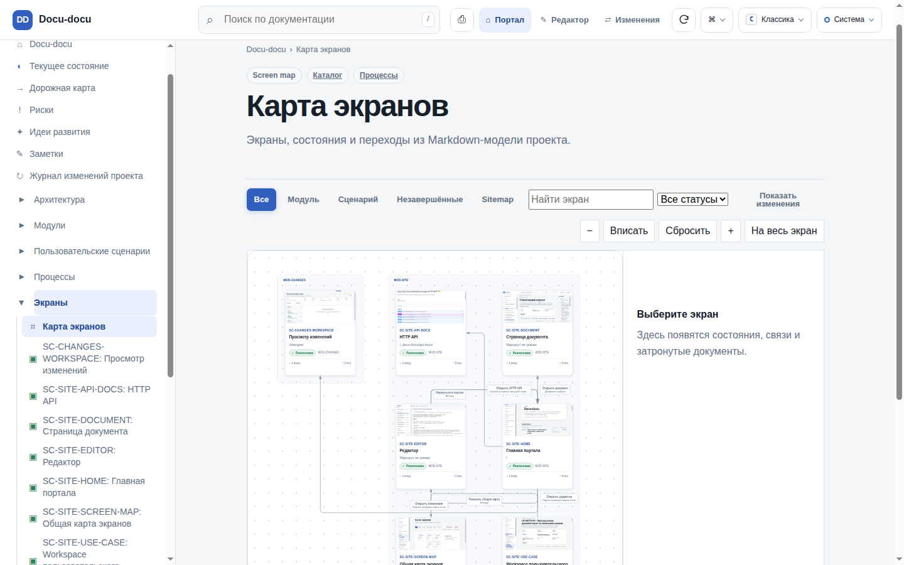
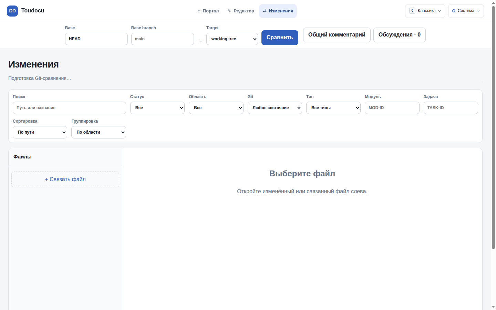

ДЛЯ ИНЖЕНЕРОВ
Следуйте архитектуре, требованиям и контексту реализации, не покидая репозиторий.
MARKDOWN НА ВХОДЕ / ПРОВЕРЕННАЯ МОДЕЛЬ НА ВЫХОДЕ
cursor-agent "Refactor the payment gateway to use the new provider"docu-docu task context TASK-PAYMENTS-001 ./docs --format jsonДЛЯ ИНЖЕНЕРОВ
Следуйте архитектуре, требованиям и контексту реализации, не покидая репозиторий.
ДЛЯ АВТОРОВ ДОКУМЕНТАЦИИ
Проверяйте структуру и связи, а затем публикуйте ту же модель как статический портал.
ДЛЯ АГЕНТОВ
Запрашивайте точный контекст задачи и Git-backed изменения вместо сканирования неразмеченного архива.
ПРОВЕРКА 01
Проверяйте типизированные документы, ссылки, переходы, контракты и связи локально или в CI.

СТАТИЧЕСКИЙ РЕЗУЛЬТАТ
Создавайте read-only HTTP-портал без базы данных, CDN, npm runtime и серверного процесса после сборки.

ДЕТЕРМИНИРОВАННЫЙ PIPELINE
Три явные команды работают с одной моделью документации из репозитория.
docu-docu check ./docs --strictdocu-docu build ./docs --output ./site --cleandocu-docu serve ./docsКОНТЕКСТ ИЗ GIT
Просматривайте затронутую документацию и запрашивайте точный контекст задачи из того же состояния репозитория.

УСТАНОВКА CLI
Installer определяет платформу, проверяет SHA-256 и устанавливает или обновляет Docu-docu в пользовательском каталоге.
curl -fsSL https://github.com/lumenikoly/docu-docu/releases/latest/download/install.sh | sh
irm https://github.com/lumenikoly/docu-docu/releases/latest/download/install.ps1 | iex
Восемь способов превратить Markdown-модель из репозитория в пользу для людей, агентов и CI.
Находите ошибки структуры, связей, маршрутов, контрактов и verification links до публикации портала или запуска CI.
docu-docu check ./docs
Превращайте ту же Markdown-модель в поисковый статический портал с диаграммами, traceability, темами и без backend.
docu-docu build ./docs
Работайте в браузере с безопасным preview, точными diagnostics, сохранением с учётом конфликтов и мгновенной пересборкой.
/_docu-docu/editor/
Смотрите Git-изменения на уровне исходника, rendered и semantic diff — включая диаграммы, API, assets и влияние на задачи.
/changes/
Создавайте навигационную карту продукта из документированных экранов, состояний, переходов и use cases.
screens/SC-*.md
Проходите use case экран за экраном с действиями, ошибками, историей и доступными hotspots.
use-cases/UC-*.html#play
Передавайте агенту только требования, правила, зависимости и проверки, относящиеся к одной задаче.
docu-docu task context TASK-ID ./docs
Используйте установленный AI skill, чтобы сверить документацию со всем репозиторием или только текущим Git diff относительно HEAD.
$docu-docu refresh diff
AI skill создаёт документацию, а Go CLI превращает её в живой локальный workspace.
$docu-docu initУстановленный AI skill анализирует репозиторий и создаёт исходную документацию.
docs/**/*.mdРедактируемый Markdown остаётся источником истины.
docu-docu serve ./docsGo CLI собирает портал, следит за файлами и обновляет модель.
Портал · Редактор · Изменения · Карта экранов · API DocsОдин локальный интерфейс объединяет все представления.
docu-docu task context TASK-ID ./docsДо реализации coding agent загружает scope задачи, правила, зависимости, связанные документы и проверки.